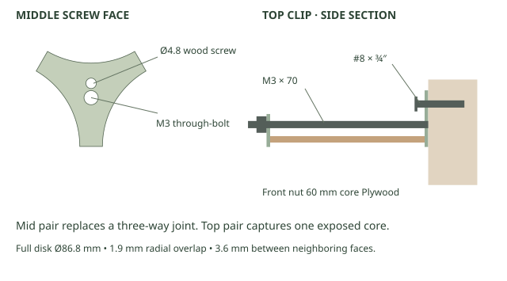

Open · drag to orbit, scroll to zoom
Download selected drawer 3MFEight-row layout

Example: nine cores across the base, narrowing to two on row eight. A narrower eight-to-one stack also fits. Count the bottom row as row 1. Put the bottom row on a continuous shelf; the screws restrain forward movement.
Choose a compartment layout
| Drawer | Capacity¹ | Use |
|---|
| Open | 235 mL | Mixed or larger parts |
| Left / right | 114.7 + 114.5 mL | Two long lanes for bits or fasteners |
| Front / back | 114.2 + 114.3 mL | Daily-use items in front, refills behind |
¹ CAD volume to the rim. The fixed 1.6 mm divider has a rounded crown. The clear mouth is 43.8 mm wide. Nominal core: 83 mm ID × 88 mm OD × 60 mm.
Face and print orientation
Print the bin on its floor and the face flat, pull up, together on the supplied plate. Align the two keys and install one #4 × ⅜″ pan-head sheet-metal screw from the face into the blind pilot. Tighten by hand just until seated. No adhesive. The disk covers the bore by 1.9 mm around the entire circumference, including the old 6 mm bottom gap. Neighboring disks have 3.6 mm clearance. The compartments have no divider slots; the screw tip stays inside a rounded lug at the floor.
The openings are covered, not airtight. For dust falling into the outside valleys, a single board on its own backboard cleat above the full bank is easier to wipe than individual fillers.
Compared with the cardboard can
Reference: 82.4 g and 2 h 12 min. The open drawer alone slices at 48.55 g / 1 h 23 min; with an ordinary tied upper connector pair, 55.98 g / 1 h 47 min. Even the front/back divider with complete anchored top hardware is 65.70 g / 2 h. Times add separate plates and include their startup; fasteners and assembly time are excluded.
Bambu Studio · P1S · PLA · 0.4 mm nozzle · 0.20 mm layers · 3 walls · 15% gyroid · no supports or brim. Can settings unknown.
Middle and top mounts
Middle connector pair · substitutes for one ordinary upper junction. Top-tier hardware · a tie-through upper pair plus a front rim keeper and rear screw tab. Top clips only · for an existing top cell.

Each anchored station takes one M3 × 70 mm 90° countersunk machine screw, M3 washer and locknut, and one #8 × ¾″ pan-head wood screw. Seat the M3 head on the plywood side first. At a middle joint, drive the wood screw before installing the front piece. On the top clip, the wood screw is accessible above the core. Add the front piece and snug the nut without compressing the tube. Use one 2.5 × 200 mm cable tie per ordinary front/rear pair, including the upper junction beneath a top clip. The outside feet use two ties per bank.
The layout shows example mounting points, not tested spacing or an eight-row load rating. Secure the backboard to its supporting structure. Keep heavy contents low; check one loaded cell and its connector first. See assembly instructions and cut dimensions.